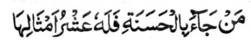

Miyakathitayan ko Ibn Mas’ud (Radhiallaho ‘Anho) a pitharo iyan a pitharo o Rasulollah (Sallallaho ‘Alaihi wa Sallam), “Sa tao a matiya sa satiman bo a batang ko Qur’an na bagi-an niyan so isa a mapiya, na so isa a mapiya na thakepen sa makasapolo. Kena ba ko pitharo a so [Alif Lam Mim] na ba isa a batang, ka so Alif na isa a batang, na so Lam na isa a batang, go so Mim na isa a batang.”
Giyangka-iya a Hadith na tiyangked iyan a kagiya, aya kalalayaman na so ‘Amaal na aya kakhaparoliya ko balas iyan na amay ka matarotop [sa lagid o Sambayang a aya kakhakowa-a ko balas iyan na amay ka minggolalan so langon o rak’at iyan]. Ogaid na giyangka-iya Hadith na inaloy niyan a so Qur’an na kena ba oto lagid, ka apiya bo so saba-adon-i mabatiya a ka na mbalasan den. Sabap ro-o, na so kabatiya-a ko omani isa a batang na ipagitong sa isa a mapiya. Go so omani isa a mapiya na thakepen sa sapolo, sa lagid den o kinidiyandi-in non o Allah:

“Sa tao a mitalingoma niyan so mapiya na aden a bagi-an niyan a sapolo a manga lagid iyan (a manga pipiya)...” (Surah Al-An’am: 160)
Ogaid na so sapolo takep na giyoto-i pithamanan a mababa a khabaloyan non.
“...Na so Allah na pethake-tekepen niyan ko tao a kabaya Iyan...” (Surah Al-Baqarah: 261)
So pizatimanan o Ayaat sa Qur’an, igira biyatiya, na mini-itong sa isa a mapiya, na miya-osay o Rasulollah (Sallallaho ‘Alaihi wa Sallam) ko kiyatharo-a niyan sa so [Alif Lam Mim] na kena ba isa a batang, ka so Alif so Lam so Mim na telo a mbida-bida a manga batang, sa so [Alif Lam Mim] na telo polo a mapiya.
Miyakam-bida-bida so panarima o manga Olama o ba so [Alif Lam Mim] na giyoto so po-onan o Surah Al-Baqarah o di na giyoto so ALAM a po-onan o Surah Al-Fil. Opama ka giyoto so po-onan o Surah Al-Baqarah, na telo-telo a batang a miya-itong, sa lagid o kisosorat iyan san. O peman o giyoto so po-onan o Surah Al-Fil na so Alif Lam Mim a po-onan o Surah Al-Baqarah na mimbaloy a siyao a batang. Sabap ro-o na mimbaloy so balas iyan a siyao-polo a mapiya.
So Baihaqi (Rahmatullahi ‘Alaihi) na miya-aloy niyan a isa a Hadith a lagid den sa ma-ana angkanan a miya-aloy a Hadith, ma-ana, “Kena ba ko pitharo a so Bismillah na ba satiman a batang, ka tiyangked aken a so Ba, so Sin ago so Mim, go so manga ped iran, na mbida-bida a manga batang.”